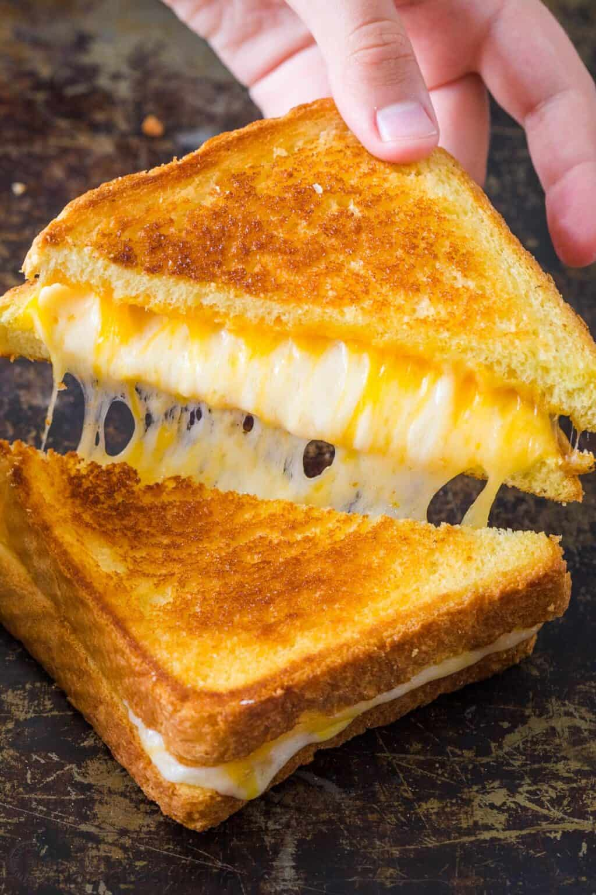

Grilled Cheese

Description
The grilled cheese sandwhich. There's really nothing much to say. It is an american classic that brings me back to when I was a kid. Crispy on the outside combined with the cheesy gooeyness on the inside. This recipe is perfect for both young and old!
Ingredients
- Bread: a thicker sliced bread such as texas toast works best
- Butter: use a generous 1/2 Tbsp of butter on each slice of bread. We use unsalted but any butter will work here
- Cheese!: I use a combination of sliced medium cheddar, gouda and Havarti cheese.
Directions
- Butter the toast: spread 1/2 Tbsp butter on one side of each slice of bread
- Heat skillet: place a skillet over low to medium/low heat. A griddle should be at 275˚F. Immediately add 2 slices of bread with the butter-side-down
- Add cheese: tack cheeses on one of the pieces of bread, cover with the other piece of toast and flip the sandwich over
- Brown the toast: continue sauteeing, flipping once, until both sides are golden brown and cheese is melted
- Serve: cut the sandwich in half on the diagonal to serve
Go Back Home